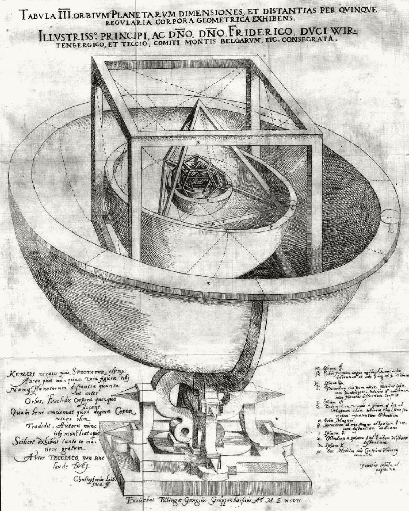

Caput II — Primaria Demonstrationis Delineatio¶
f. 0025 · p. 18Primaria demonstrationis delineatio.
Quibus ita praemissis, ut ad propositum veniam; atque modo recensitas Copernici hypotheses de mundo novo, novo argumento probem: rem a primo, quod aiunt, ovo, qua brevitate fieri poterit repetam.
f. 0028 · p. 19Corpus erat id, quod initio Deus creavit: cuius definitionem si habeamus, existimo mediocriter clarum fore, cur initio corpus non aliam rem Deus creaverit. Dico quantitatem Deo fuisse propositam: ad quam obtinendam omnibus opus fuit, quae ad corporis essentiam pertinent: ut ita quantitas corporis, quatenus corpus, quaedam forma, Definitionisque origo sit. Quantitatem autem Deus ideo ante omnia existere voluit; ut esset curvi ad Rectum comparatio. Hac enim una re divinus mihi Cusanus (1440), aliique videntur: quod Recti, Curvique ad invicem habitudinem tanti fecerunt, et Curvum Deo, Rectum creaturis ausi sint comparare: ut haud multo utiliorem operam praestiterint, qui Creatorem creaturis, Deum homini, iudicia divina humanis: quam qui curvum recto, circulum quadrato aequiparare conati sunt.
Cumque vel in hoc solo satis constitisset penes Deum quantitatum aptitudo, et curvi nobilitas: accessit tamen et alterum longe maius: Dei trinuni imago in Sphaerica superficie, Patris scilicet in centro, Filii in superficie, Spiritus in aequalitate σχέσεως inter punctum et ambitum. Nam quae Cusanus circulo, alii forte globo tribuerent: ea ego Soli Sphaericae superficiei arrogo. Nec persuaderi possum, Curvorum quicquam nobilius esse, aut perfectius ipsa Sphaerica superficie. Globus enim plus est Sphaerica superficie, et mixtus rectitudini, qua sola impletur intus. Circulus vero nisi in plano recto existat, hoc est, nisi Sphaerica superficies, aut globus plano recto secetur: circulus nullus erit. Unde videre est, multas illic a Cubo in globum, hic a quadrato in circulum secundario defluere proprietates, propter diametri rectitudinem.
Sed cur denique Curvi et Recti discrimina, curvique nobilitas Deo fuerunt proposita in exornando mundo? Cur enim? nisi quia a Conditore perfectissimo necesse omnino fuit, ut pulcherrimum opus constitueretur. Fas enim nec est nec unquam fuit (ut loquitur ex Timaeo Platonis Cicero in libro de universitate) quicquam nisi pulcherrimum facere eum, qui esset optimus. Cum igitur Idaeam mundi Conditor animo praeconceperit (loquimur humano more, ut homines intelligamus) Atque Idaea sit rei prioris, sit vero, ut modo dictum est, rei optimae, ut forma futuri operis et ipsa fiat optima: Patet quod his legibus quas Deus ipse sua bonitate sibi praescribit,
f. 0029 · p. 20nullius rei Idaeam pro constituendo mundo suscipere potuerit, quam suae ipsius essentiae: quae bifariam, quam praestans atque divina sit, considerari potest, primo in se, quatenus est una in essentia, trina in personis, deinde collatione facta cum creaturis.
Hanc imaginem, hanc Idaeam mundo imprimere voluit, ut is fieret optimus atque pulcherrimus, utque is eam suscipere posset, Quantum condidit, quantitatesque Sapientissimus conditor excogitavit, quarum omnis, ut ita dicam, essentia in haec duo discrimina caderet, Rectum et Curvum, ex quibus Curvum nobis duobus illis modo dictis modis Deum repraesentaret. Neque enim existimandum est, temere extitisse tam apta praefigurando Deo discrimina, ut Deus non de his ipsis cogitaverit, sed quantum corpus propter alias causas, alioque consilio condiderit: atque postea Recti et Curvi comparatio, et haec cum Deo similitudo, sua sponte, quasi fortuito extiterit.
Quin potius verisimile est, initio omnium certo consilio Curvum et Rectum a Deo electa, ad adumbrandum in mundo divinitatem Conditoris: atque ut haec existerent, quantitates fuisse, atque ut quantitas haberetur, conditum esse primo omnium Corpus.
Videamus modo, ecquomodo Creator optimus has quantitates in mundi fabrica adhibuerit: et quid verisimile sit nostris ratiocinationibus a Conditore factum esse: ut illud postea, cum in Antiquis, tum in novis hypothesibus quaeramus, eique palmam tribuamus, penes quem illud reperietur.
Mundum igitur totum figura claudi sphaerica, abunde satis disputavit Aristoteles, ductis inter caetera ex nobilitate sphaericae superficiei argumentis: quibus etiamnum ultima Copernici fixarum sphaera quamvis motu carens, eandem figuram tuetur, recipitque Solem tanquam centrum in intimum sinum. Orbes vero caeteros rotundos esse circularis stellarum motus arguit. Curvum igitur ad mundi ornatum adhibitum esse, ulteriore probatione non eget. Cum autem tria quantitatum genera videamus in mundo, figuram, numerum et amplitudinem corporum: Curvum quidem adhuc in sola figura reperimus. Neque enim amplitudinis ulla ratio ex eo est, quod inscriptum simili (sphaera sphaerae, circulus
f. 0030 · p. 21circulo) ex eodem Centro, aut undiquaque tangit, aut nullibi: et Sphaericum ipsum, cum solum et unicum sit in suo quantitatis genere: non potest alius numeri, quam ternarii subiectum esse. Quod si igitur solum Curvum Deus in conditu respexisset, praeter Solem in centro, qui patris: sphaeram fixarum vel aquas Mosaicas in ambitu, quae filii; auram coelestem omnia replentem, sive extensionem et firmamentum illud, quod Spiritus imago esset; praeter haec, inquam, nihil existeret in hoc aedificio mundano. Nunc vero cum et fixae sint innumerabiles, et mobilium non incertissimus catalogus, et coelorum magnitudines inaequales invicem: necesse est causas eorum omnium ex rectitudine petamus. Nisi forte Deum putabimus quicquam in mundo temere fecisse, cum rationes optimae suppeterent: id quod nemo mihi persuadebit, ut vel de fixis sentiam: quarum tamen situs maxime confusus, quasi fortuitus sementis iactus nobis videtur.
Veniamus igitur ad Rectas quantitates. Sicut autem antea Sphaerica superficies ideo assumpta est, quia perfectissima fuit quantitas: ita iam uno saltu ad corpora transeamus, ut quae ex Rectis perfectae sunt quantitates, et tribus dimensionibus constant: nam Idaeam mundi perfectam esse convenit. Lineas vero et superficies rectas, ut infinitas, et proin ordinis minime capaces, e mundo finito, ordinatissimo, pulcherrimo eijciamus. Rursum ex corporibus, quorum infinitates infinita sunt genera, seligamus aliqua censu habito per certas notas; puta, quae aut latera aut angulos, aut plana, singula vel alterna, vel quovis constanti modo mixta habeant invicem aequalia: ut ita bona cum ratione ad finitum aliquid veniatur. Quod si quod genus corporum per certas conditiones descriptum, intra species quidem numero finitas consistit; sed tamen in ingentem numerorum copiam multiplicatur: eorum corporum angulos et centra planorum pro fixarum multitudine, magnitudine, situque demonstrando, si possumus, adhibeamus: sin autem is labor non est hominis, ergo tantisper differamus numeri ac situs earum rationem quaerere: dum quis nobis ad unum omnes, quot quantaeve sint, descripserit. Missis igitur fixis, atque ei permissis, qui solus numerat multitudinem stellarum, et singulas nomine vocat, (Psal. 147.) sapientissimo Artifici: nos oculos ad propinquas, paucas et mobiles convertamus.
f. 0031 · p. 22Denique igitur delectum corporum si habuerimus, atque omnem mixtorum turbam eiecerimus, retineamus vero sola illa, quorum omnia plana et aequilatera, et aequiangula fuerint: restabunt nobis haec quinque Corpora Regularia, quibus Graeci haec ascripsere nomina, Cubus seu Hexaedrum, Pyramis seu Tetraedrum, Dodecaedrum, Icosaedrum, Octaedrum. Quodque his quinque plura esse non possint, vide Euclid. lib. 13. post prop. 18. scholion (Elements XIII.18).
Quare sicut horum definitus et exiguus admodum est numerus, caeterorum aut innumerabiles, aut infinitae species: ita decuit in mundo duo esse stellarum genera, evidenti discrimine ab se invicem distincta (cuiusmodi motus et quies est) quorum unum genus infinito simile, ut fixae, alterum angustum ut Planetae. Non est huius loci disputare de causis, cur hae moveantur, illa non. Sed posito, quod Planetae motu indiguerint, sequitur, ut hunc obtinerent, rotundos orbes accipere debuisse.
Habemus orbem propter motum, et corpora propter numerum et magnitudines: quid restat amplius, quin dicamus cum Platone, θεὸν ἀεὶ γεωμετρεῖν, atque in hac mobilium fabrica corpora orbibus, et orbes corporibus inscripsisse tantisper, dum nullum amplius corpus restaret, quod non intra et extra mobilibus orbibus vestitum esset. Nam ex 13. 14. 15. 16. 17. libri 13. Euclidis videre est: quam haec corpora natura sua sint apta ad hanc inscriptionem et circumscriptionem. Quare si quinque corpora mediantibus et claudentibus orbibus, inserantur sibi mutuo: habebimus numerum sex orbium.
Quod si aliqua mundi aetas hoc pacto de mundi dispositione disputavit, ut sex orbes poneret mobiles circa Solem immobilem: illa utique veram Astronomiam tradidit. Atqui eiusmodi sex orbes habet Copernicus, eosque binos in eiusmodi ad invicem proportione: ut haec quinque corpora omnia aptissime interlocari possint: quae summa erit eorum quae sequuntur. Quare tantisper audiendus est, dum quis aut aptiores ad haec Philosophemata protulerit hypotheses: aut docuerit, fortuito in numeros atque in mentem hominis irrepere posse, quod optima ratione ex ipsis naturae principiis deductum est. Nam quid admirabilius, quid ad persuadendum accommodatius dici aut fingi po-
f. 0032 · p. 23test: quam quod ea, quae Copernicus ex φαινομένοις, ex effectibus, ex posterioribus, quasi caecus baculo gressum firmans (ut ipse Rhetico dicere solitus est) felici magis quam confidenti coniectura constituit, atque ita sese habere credidit, ea inquam omnia rationibus a priori, a causis, a Creationis idaea deductis rectissime constituta esse deprehendantur.
Nam si quis philosophicas istas rationes, sine rationibus, et solo risu excipere atque eludere voluerit: propterea quod novus homo sub finem seculorum, tacentibus illis Philosophiae luminibus antiquis, philosophica ista proferam: illi ego ducem, autorem et praemonstratorem ex antiquissimo seculo proferam Pythagoram: cuius multa in scholis mentio, quod cum praestantiam videret quinque Corporum, simili plane ratione ante bis mille annos, qua nunc ego, Creatoris cura non indignum censuerit ad illa respicere: atque rebus mathematicis physice, et ex sua qualibet proprietate accidentaria censitis, res non mathematicas accommodaverit. Terram enim Cubo aequiparavit, quia stabilis uterque, quod tamen de cubo non proprie dicitur. Coelo Icosaedrum dedit, quia utrumque volubile: Igni Pyramida, quia haec volantis igniculi forma: reliqua duo corpora inter aerem et aquam distribuit, propter similem utrinque cum vicinis cognationem. Sed enim Copernicus illi viro defuit, qui prius, quid esset in mundo, diceret: absque eo non fuisset, dubium non est, quin quare esset, invenisset, atque haec coelorum proportio tam nota nunc esset, quam ipsa quinque corpora; tam item recepta, quam hoc temporum decursu invaluit illa de Solis motu, deque Telluris quiete opinio.
Verum age vel tandem experiamur, utrum inter orbes Copernici sint istae corporum proportiones. Ac initio rem crassiuscule censeamus. Maxima distantiarum differentia in Copernico est inter Iovem et Martem: Ut vides in explicatione hypothesium Tab. 1. et infra cap. 14. et 15. Martis enim distantia a Sole non aequat tertiam partem Ioviae. Quaeratur igitur corpus, quod maximam facit differentiam inter orbem circumscriptum et inscriptum (concedatur nobis haec κατάχρησις cavum pro solido censendi) quod est Tetraedrum sive Pyramis. Est igitur inter Iovem et Martem Pyramis. Post hos maximam faciant differentiam distantiae Iupiter et
f. 0033 · p. 24Saturnus. Huius enim ille paulo plus dimidium aequat. Similis apparet in cubi intimo et extimo orbe differentia. Cubum igitur Saturnus ambit, cubus Iovem.
Aequalis fere proportio est inter Venerem et Mercurium, nec absimilis inter orbes Octaedri. Venus igitur hoc corpus ambit, Mercurius induit.
Reliquae duae proportiones inter Venerem et Terram, inter hanc et Martem minimae sunt, et fere aequales, nempe interior exterioris dodrans aut bes. In Icosaedro et Dodecaedro sunt etiam aequales distantiae binorum orbium: Et proportione utuntur minima inter reliqua regularia corpora. Quare verisimile est, Martem ambire terram mediante alterutro horum corporum: Terram autem a Venere summotam, mediante reliquo. Quare si quis ex me quaerat, cur sint tantum sex orbes mobiles, respondebo, quia non oporteat plures quinque proportiones esse, totidem nempe, quot regularia sunt in mathesi corpora. Sex autem termini consummant hunc proportionum numerum.
Huc pertinet Tabula Tertia.
f. 0034 · Tabula III


Annotatio in Caput secundum.
Quodque his quinque) Corporum nobilitas est ex simplicitate, et ex aequalitate distantiae planorum a centro figurae. Sicut enim norma et regula creaturarum Deus est: sic Sphaera corporum. Atqui ea habet dictas proprietates. 1. Est simplicissima, quia uno clauditur termino, seipsa scilicet. 2. Omnia eius puncta aequalissime a centro distant. Ex corporibus igitur proxime accedunt regularia ad Sphaerae perfectionem. Eorum definitio haec est, ut habeant 1. omnia latera, 2. plana, et 3. angulos, singula aequales et specie et magnitudine, quod est simplicitatis: quam positam definitionem sequitur illud ultro, quod 4. omnium planorum centra aequaliter a medio distent, 5. quod inscripta globum omnibus angulis tangant superficiem, 6. quod in ea haereant, 7. quod inscriptum globum omnibus planorum centris tangant, 8. quod proinde inscriptus globus haereat immotus, 9. et quod idem centrum habeat cum figura. Quibus rebus efficitur altera similitudo cum Sphaera, quae est ex aequalitate distantiae planorum.
f. 0035 · p. 25Scholion autem illud ita sonat: Ajo vero praeter dictas quinque figuras non posse aliam constitui figuram solidam, quae planis et aequilateris et aequiangulis contineatur, inter se aequalibus. Non enim ex duobus triangulis, sed neque ex aliis duabus figuris solidus constituetur angulus.
Sed ex tribus triangulis, constat Pyramidis angulus.
Ex quatuor autem, Octaedri.
Ex quinque vero, Icosaedri.
Nam ex triangulis sex et aequilateris, et aequiangulis ad idem punctum coeuntibus, non fiet angulus solidus. Cum enim trianguli aequilateri angulus, recti unius bessem contineat, erunt eiusmodi sex anguli rectis quatuor aequales. Quod fieri non potest. Nam solidus omnis angulus, minoribus quam rectis quatuor angulis continetur, per 21. 11.
Ob easdem sane causas, neque ex pluribus quam planis sex eiusmodi angulus solidus constat.
Sed ex tribus quadratis Cubi angulus continetur.
Ex quatuor nullus potest. Rursus enim recti quatuor erunt.
Ex tribus autem pentagonis aequilateris, et aequiangulis Dodecaedri angulus continetur. Sed ex quatuor nullus potest. Cum enim Pentagoni aequilateri angulus rectus sit, et quinta recti pars, erunt quatuor anguli rectis quatuor maiores. Quod fieri nequit.
Nec sane ex aliis polygonis figuris solidus angulus continebitur, quod hinc quoque absurdum sequatur. Quamobrem perspicuum est, praeter dictas quinque figuram aliam solidam non posse constitui, quae sub planis aequilateris et aequiangulis contineatur.
Corpus |
Planum |
Plana |
Latera |
Anguli |
Orbe inscriptum |
|---|---|---|---|---|---|
Cubus |
quadrangulum |
6 |
12 |
8 |
mediocrem |
Octaedron |
triangulum |
8 |
12 |
6 |
cubo aequalem |
Dodecaedron |
quinquangulum |
12 |
30 |
20 |
maximum |
Icosaedron |
triangulum |
20 |
30 |
12 |
dodec. aequalem |
Tetraedron |
triangulum |
4 |
6 |
4 |
minimum |